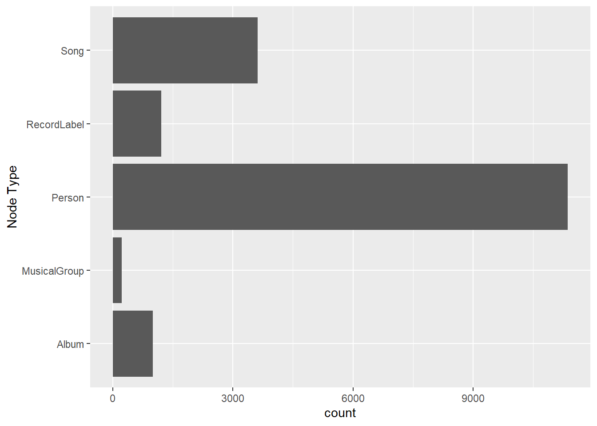
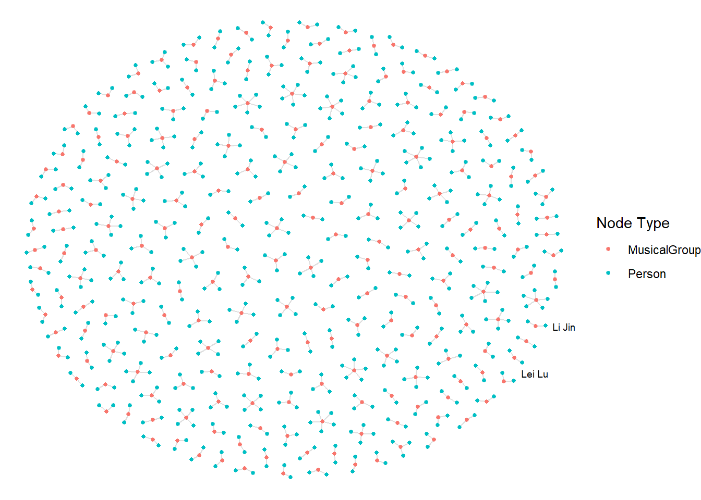
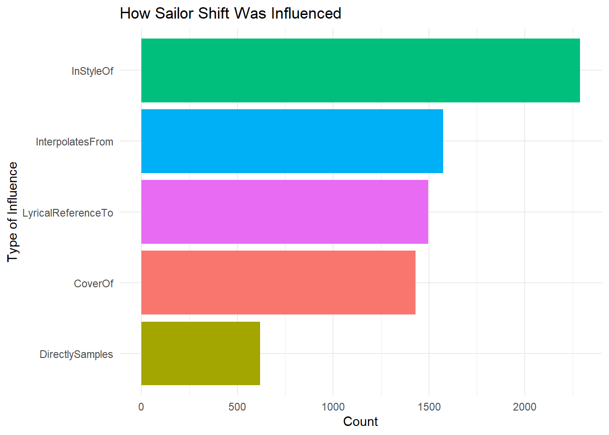
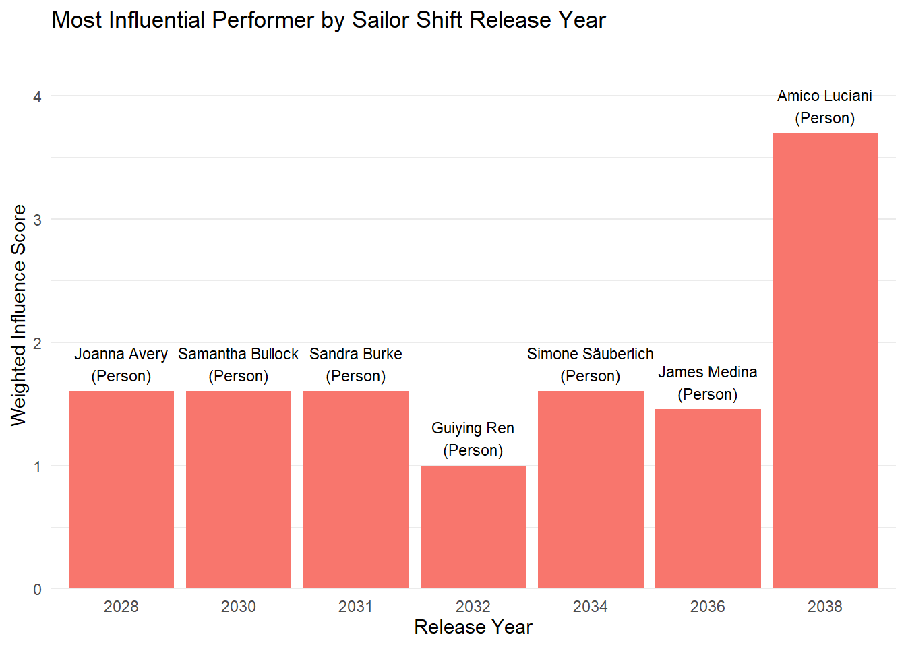
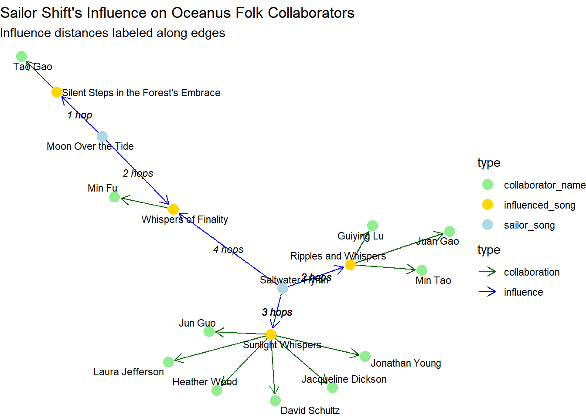

pacman::p_load(tidyverse, jsonlite, SmartEDA, tidygraph, ggraph, packcircles, stringr, igraph, visNetwork, treemap)Take-Home Exercise 2
Load the necessary libraries
Read the data
# Read JSON file
mc1_data <- fromJSON("MC1_release/MC1_graph.json")Overview the data
glimpse(mc1_data)List of 5
$ directed : logi TRUE
$ multigraph: logi TRUE
$ graph :List of 2
..$ node_default: Named list()
..$ edge_default: Named list()
$ nodes :'data.frame': 17412 obs. of 10 variables:
..$ Node Type : chr [1:17412] "Song" "Person" "Person" "Person" ...
..$ name : chr [1:17412] "Breaking These Chains" "Carlos Duffy" "Min Qin" "Xiuying Xie" ...
..$ single : logi [1:17412] TRUE NA NA NA NA FALSE ...
..$ release_date : chr [1:17412] "2017" NA NA NA ...
..$ genre : chr [1:17412] "Oceanus Folk" NA NA NA ...
..$ notable : logi [1:17412] TRUE NA NA NA NA TRUE ...
..$ id : int [1:17412] 0 1 2 3 4 5 6 7 8 9 ...
..$ written_date : chr [1:17412] NA NA NA NA ...
..$ stage_name : chr [1:17412] NA NA NA NA ...
..$ notoriety_date: chr [1:17412] NA NA NA NA ...
$ links :'data.frame': 37857 obs. of 4 variables:
..$ Edge Type: chr [1:37857] "InterpolatesFrom" "RecordedBy" "PerformerOf" "ComposerOf" ...
..$ source : int [1:37857] 0 0 1 1 2 2 3 5 5 5 ...
..$ target : int [1:37857] 1841 4 0 16180 0 16180 0 5088 14332 11677 ...
..$ key : int [1:37857] 0 0 0 0 0 0 0 0 0 0 ...Inspect structure
str(mc1_data, max.level=1)List of 5
$ directed : logi TRUE
$ multigraph: logi TRUE
$ graph :List of 2
$ nodes :'data.frame': 17412 obs. of 10 variables:
$ links :'data.frame': 37857 obs. of 4 variables:Extract and Inspect
nodes_tbl <- as_tibble(mc1_data$nodes)
edges_tbl <- as_tibble(mc1_data$links)ggplot(data = edges_tbl,
aes(y = `Edge Type`)) +
geom_bar()
ggplot(data = nodes_tbl,
aes(y = `Node Type`)) +
geom_bar()
Creating knowledge graph
Mapping from node id to row index. Ensure each id from your node list is mapped to the correct row number.
id_map <- tibble(id = nodes_tbl$id,
index = seq_len(
nrow(nodes_tbl)))edges_tbl <- edges_tbl %>%
left_join(id_map, by = c("source" = "id")) %>%
rename(from = index) %>%
left_join(id_map, by = c("target" = "id")) %>%
rename(to = index)Remove the NA
edges_tbl <- edges_tbl %>%
filter(!is.na(from), !is.na(to))Creating the graph
graph <- tbl_graph(nodes = nodes_tbl,
edges = edges_tbl,
directed = mc1_data$directed)Visualising the knowledge graph
set.seed(1234)Visualising the whole graph
ggraph(graph, layout = "fr") +
geom_edge_link(alpha = 0.3,
colour = "gray") +
geom_node_point(aes(color = `Node Type`),
size = 4) +
geom_node_text(aes(label = name),
repel = TRUE,
size = 2.5) +
theme_void()Filter edges to only MemberOf
graph_memberof <- graph %>%
activate(edges) %>%
filter(`Edge Type` == "MemberOf")Extract only connected nodes (used in the edges)
used_nodes_indices <- graph_memberof %>%
activate(edges) %>%
as_tibble() %>%
select(from, to) %>%
unlist() %>%
unique()Keep only those nodes
graph_memberof <- graph_memberof %>%
activate(nodes) %>%
mutate(row_id = row_number()) %>%
filter(row_id %in% used_nodes_indices) %>%
select(-row_id)Plot the sub-graph
Show the code
ggraph(graph_memberof,
layout = "fr") +
geom_edge_link(alpha = 0.5,
colour = "gray") +
geom_node_point(aes(color = `Node Type`),
size = 1) +
geom_node_text(aes(label = name),
repel = TRUE,
size = 2.5) +
theme_void()
Part A: Who has Sailor Shift been most influenced by over time?
To understand how Sailor Shift’s musical style has evolved, we examined the influence relationships affecting her songs over time. We defined influence using five edge types from the dataset: InStyleOf, CoverOf, DirectlySamples, InterpolatesFrom, and LyricalReferenceTo.
We began by identifying all songs performed by Sailor Shift and organizing them chronologically using their release dates. This temporal ordering allowed us to assess changes in external influences throughout her career.
Next, we filtered the full graph to isolate influential edges targeting Sailor’s songs. These were joined with metadata to identify the artists, groups, or labels responsible for the original source of influence. To ensure accuracy, we also validated that the influencing node was a valid performer using song-to-performer relationships.
A1. Convert & Validate Dates
# Check raw release_date format
nodes_tbl %>%
select(name, release_date) %>%
filter(!is.na(release_date)) %>%
distinct(release_date) %>%
arrange(release_date)# A tibble: 64 × 1
release_date
<chr>
1 1975
2 1977
3 1979
4 1980
5 1981
6 1982
7 1983
8 1984
9 1985
10 1986
# ℹ 54 more rowsA2. Check Sailor Shift’s song release date sorted chronologically
Show the code
# 1. Find Sailor Shift's ID
sailor_id <- nodes_tbl %>%
filter(name == "Sailor Shift") %>%
pull(id)
# 2. Get all songs she performed
sailor_songs <- edges_tbl %>%
filter(`Edge Type` == "PerformerOf", source == sailor_id) %>%
pull(target)
# 3. Retrieve and sort their release dates
sailor_songs_tbl <- nodes_tbl %>%
filter(id %in% sailor_songs) %>%
select(id, name, release_date) %>%
mutate(release_year = as.numeric(release_date)) %>%
arrange(release_year)
# 4. Print result
print(sailor_songs_tbl)# A tibble: 26 × 4
id name release_date release_year
<int> <chr> <chr> <dbl>
1 17272 Tidal Pop Waves 2028 2028
2 17279 High Tide Heartbeat 2028 2028
3 17280 Electric Eel Love 2028 2028
4 17281 Sun-Drenched Daydream 2028 2028
5 17282 Chord of the Deep 2028 2028
6 17273 Salty Dreams 2030 2030
7 17283 Heart of the Habitat 2030 2030
8 17284 Reef Rhythm 2030 2030
9 17285 Driftwood Lullaby 2030 2030
10 17410 Seashell Serenade 2030 2030
# ℹ 16 more rowsA3. Influence Types
influence_types <- c(
"InStyleOf",
"CoverOf",
"DirectlySamples",
"InterpolatesFrom",
"LyricalReferenceTo"
)Build influence data table
influences <- edges_tbl %>%
filter(`Edge Type` %in% influence_types)Plot influence
Show the code
influences %>%
count(`Edge Type`) %>%
ggplot(aes(x = reorder(`Edge Type`, n), y = n, fill = `Edge Type`)) +
geom_col(show.legend = FALSE) +
coord_flip() +
labs(title = "How Sailor Shift Was Influenced",
x = "Type of Influence", y = "Count") +
theme_minimal()
A4. Find the song released dates
library(dplyr)
# 1. Define the years in which she released music
years <- sort(unique(sailor_songs_tbl$release_year))
years[1] 2028 2030 2031 2032 2034 2036 2038 2040Define influence_types
Show the code
library(dplyr)
yearly_top_influencers <-
edges_tbl %>%
# 1. keep only influence edges
filter(`Edge Type` %in% influence_types) %>%
# 2. attach Sailor Shift song years (join on source → id)
inner_join(
sailor_songs_tbl,
by = c("source" = "id")
) %>%
# 3. bring in influencer name + node type
left_join(
nodes_tbl %>% select(id, influencer = name, type = `Node Type`),
by = c("target" = "id")
) %>%
# 4. tally per year + influencer
count(release_year, influencer, type, name = "count") %>%
# 5. pick the single top influencer each year
group_by(release_year) %>%
slice_max(count, n = 1, with_ties = FALSE) %>%
ungroup() %>%
arrange(release_year)
print(yearly_top_influencers)# A tibble: 7 × 4
release_year influencer type count
<dbl> <chr> <chr> <int>
1 2028 Addicted to Your Heartache Album 1
2 2030 Echoes of Forgotten Light Song 1
3 2031 Dreamscape of Judgment Song 1
4 2032 Parallel Memories Song 1
5 2034 Divergent Memories Song 1
6 2036 Coastal Whispers of Biscay Song 1
7 2038 Altitude of Mistakes Song 1Build perf_map
perf_map <- edges_tbl %>%
filter(`Edge Type` == "PerformerOf") %>%
select(influencer_song = target,
performer_id = source)Build yearly_top_influencers_artists
Show the code
yearly_top_influencers_artists <-
edges_tbl %>%
filter(`Edge Type` %in% influence_types) %>%
# attach Sailor Shift’s song years
inner_join(sailor_songs_tbl, by = c("source" = "id")) %>%
# attach the song→performer mapping
inner_join(perf_map, by = c("target" = "influencer_song")) %>%
# get the performer’s name & node type
left_join(
nodes_tbl %>% select(id, influencer = name, type = `Node Type`),
by = c("performer_id" = "id")
) %>%
# only keep real performers (Person / Music Group / Record Label)
filter(type %in% c("Person", "Music Group", "Record Label")) %>%
# count per year + performer
count(release_year, influencer, type, name = "count") %>%
# pick the top performer each year
group_by(release_year) %>%
slice_max(count, n = 1, with_ties = FALSE) %>%
ungroup() %>%
arrange(release_year)
print(yearly_top_influencers_artists)# A tibble: 7 × 4
release_year influencer type count
<dbl> <chr> <chr> <int>
1 2028 Jeremiah Love Person 1
2 2030 Gang Shao Person 1
3 2031 Sandra Burke Person 1
4 2032 Guiying Ren Person 1
5 2034 Joshua Taylor Person 1
6 2036 Daniel Mccormick Person 1
7 2038 Amico Luciani Person 1To compare influence levels across different types (e.g., lyrical vs. stylistic), we computed normalized weights: rarer influence types were assigned higher scores to balance their impact in the analysis. For each year in which Sailor released music, we calculated a weighted influence score for every performer that influenced her that year.
A5. Build weighted counts
# 1. Count how many times each Edge Type occurs
base_counts <- influences %>%
count(`Edge Type`, name = "n")
# 2. Examine
print(base_counts)# A tibble: 5 × 2
`Edge Type` n
<chr> <int>
1 CoverOf 1429
2 DirectlySamples 619
3 InStyleOf 2289
4 InterpolatesFrom 1574
5 LyricalReferenceTo 1496Auto_weights
# 3. Compute max frequency
max_n <- max(base_counts$n)
# 4. Build the named weight vector
auto_weights <- base_counts %>%
mutate(weight = max_n / n) %>%
select(`Edge Type`, weight) %>%
deframe()
print(auto_weights) CoverOf DirectlySamples InStyleOf InterpolatesFrom
1.601819 3.697900 1.000000 1.454257
LyricalReferenceTo
1.530080 Build weights → weighted_top_by_year_auto
Show the code
weighted_top_by_year_auto <- edges_tbl %>%
filter(`Edge Type` %in% influence_types) %>%
inner_join(sailor_songs_tbl, by = c("source" = "id")) %>%
inner_join(perf_map, by = c("target" = "influencer_song")) %>%
left_join(
nodes_tbl %>% select(id, performer = name, type = `Node Type`),
by = c("performer_id" = "id")
) %>%
filter(type %in% c("Person", "Music Group", "Record Label")) %>%
mutate(weight = recode(`Edge Type`, !!!auto_weights)) %>%
group_by(release_year, performer, type) %>%
summarize(score = sum(weight), .groups = "drop") %>%
group_by(release_year) %>%
slice_max(score, n = 1, with_ties = FALSE) %>%
ungroup() %>%
arrange(release_year)
print(weighted_top_by_year_auto)# A tibble: 7 × 4
release_year performer type score
<dbl> <chr> <chr> <dbl>
1 2028 Joanna Avery Person 1.60
2 2030 Samantha Bullock Person 1.60
3 2031 Sandra Burke Person 1.60
4 2032 Guiying Ren Person 1
5 2034 Simone Säuberlich Person 1.60
6 2036 James Medina Person 1.45
7 2038 Amico Luciani Person 3.70A6. Most Influential Performer by Sailor Shift Release Year
The resulting chart below shows the top influencer by year, accounting for both the frequency and type of influence. Each bar represents a release year in Sailor’s career, annotated with the name of her top influencer (person, group, or label) and the cumulative influence score.
This approach reveals both consistent sources of inspiration and shifts in influence throughout her discography, offering insight into how her sound may have been shaped by key collaborators or predecessors.
Show the code
library(ggplot2)
ggplot(weighted_top_by_year_auto,
aes(x = factor(release_year), y = score, fill = type)) +
geom_col(show.legend = FALSE) +
geom_text(aes(label = paste0(performer, "\n(", type, ")")),
vjust = -0.3, size = 3) +
scale_y_continuous(expand = expansion(mult = c(0, 0.2))) +
labs(
title = "Most Influential Performer by Sailor Shift Release Year",
x = "Release Year",
y = "Weighted Influence Score"
) +
theme_minimal() +
theme(
axis.text.x = element_text(angle = 0, vjust = 0.5),
panel.grid.major.x = element_blank()
)
Part B: Who has Sailor Shift collaborated with and directly or indirectly influenced?
To answer this question, we first identified all artists who collaborated with Sailor Shift, and then checked whether any of these collaborators were later influenced by her music either directly (1 hop) or indirectly (2 hops).
Next, we extracted all PerformerOf relationships involving Person-type nodes, then grouped artists by song. For each song performed by Sailor Shift, we generated artist pairs to determine collaborators. This yielded a list of artists who co-performed songs with her.
B1. Create a clean collaboration data table for all artists who collaborated
Show the code
library(dplyr)
library(tidyr)
# Step 1: Get all PerformerOf edges with Person nodes only
performer_edges <- edges_tbl %>%
filter(`Edge Type` == "PerformerOf") %>%
inner_join(nodes_tbl %>% filter(`Node Type` == "Person") %>% select(id),
by = c("source" = "id")) %>%
select(artist_id = source, song_id = target)
# Step 2: For each song with >1 artist, create artist pairs (collaborators)
collaborations <- performer_edges %>%
group_by(song_id) %>%
filter(n() > 1) %>%
summarise(pairs = list(as.data.frame(t(combn(artist_id, 2)))), .groups = "drop") %>%
unnest(pairs) %>%
rename(from = V1, to = V2) %>%
distinct()
collaborations_named <- collaborations %>%
left_join(nodes_tbl %>% select(id, from_name = name), by = c("from" = "id")) %>%
left_join(nodes_tbl %>% select(id, to_name = name), by = c("to" = "id"))
print(collaborations_named)# A tibble: 21,217 × 5
song_id from to from_name to_name
<int> <int> <int> <chr> <chr>
1 0 1 2 Carlos Duffy Min Qin
2 0 1 3 Carlos Duffy Xiuying Xie
3 0 2 3 Min Qin Xiuying Xie
4 5 7 8 Xiulan Zeng David Franklin
5 15 16 17 Timothy Shea Philippine Colin
6 15 16 19 Timothy Shea Jordan Mullins
7 15 16 20 Timothy Shea Xiuying Meng
8 15 17 19 Philippine Colin Jordan Mullins
9 15 17 20 Philippine Colin Xiuying Meng
10 15 19 20 Jordan Mullins Xiuying Meng
# ℹ 21,207 more rowsPrint all artists Sailor has collaborated with
Show the code
# Step 1: Filter rows where Sailor Shift is involved
sailor_collaborations_named <- collaborations_named %>%
filter(from_name == "Sailor Shift" | to_name == "Sailor Shift")
# Step 2: Create a unified collaborator column (the "other" artist)
sailor_collaborations_named <- sailor_collaborations_named %>%
mutate(
collaborator_name = ifelse(from_name == "Sailor Shift", to_name, from_name)
) %>%
select(song_id, collaborator_name, from_name, to_name)
print(sailor_collaborations_named)# A tibble: 3 × 4
song_id collaborator_name from_name to_name
<int> <chr> <chr> <chr>
1 17350 Beatrice Albright Sailor Shift Beatrice Albright
2 17356 Daniel O'Connell Sailor Shift Daniel O'Connell
3 17410 Kai Reynolds Kai Reynolds Sailor Shift B2. Tracing Her Influence
We defined Sailor’s influence using five edge types: CoverOf, InStyleOf, DirectlySamples, InterpolatesFrom, and LyricalReferenceTo. From songs performed by Sailor Shift, we traced:
Direct influence (1 hop): Songs that were influenced by her songs
Indirect influence (2 hops): Songs influenced by those direct target songs
We then looked for performers of those influenced songs, filtering by Person, MusicGroup, or RecordLabel node types.
Show the code
library(dplyr)
# Step 1: Get Sailor Shift's ID
sailor_id <- nodes_tbl %>%
filter(name == "Sailor Shift") %>%
pull(id)
# Step 2: Get all songs she performed
sailor_songs <- edges_tbl %>%
filter(`Edge Type` == "PerformerOf", source == sailor_id) %>%
pull(target)
# Step 3: Define influence edge types
influence_types <- c("CoverOf", "InStyleOf", "DirectlySamples", "InterpolatesFrom", "LyricalReferenceTo")
# Step 4: Find directly influenced songs (1 hop)
direct_targets <- edges_tbl %>%
filter(`Edge Type` %in% influence_types, source %in% sailor_songs) %>%
pull(target)
# Step 5: Find indirectly influenced songs (2 hops)
indirect_targets <- edges_tbl %>%
filter(`Edge Type` %in% influence_types, source %in% direct_targets) %>%
pull(target)
# Step 6: Get artists who performed directly influenced songs
direct_influenced_ids <- edges_tbl %>%
filter(`Edge Type` == "PerformerOf", target %in% direct_targets) %>%
pull(source) %>%
unique()
# Step 7: Get artists who performed indirectly influenced songs
indirect_influenced_ids <- edges_tbl %>%
filter(`Edge Type` == "PerformerOf", target %in% indirect_targets) %>%
pull(source) %>%
unique()
# Step 8: Create influence_tbl
sailor_influence_tbl <- bind_rows(
tibble(id = direct_influenced_ids, influence = "direct"),
tibble(id = indirect_influenced_ids, influence = "indirect")
) %>%
distinct(id, .keep_all = TRUE) %>%
inner_join(nodes_tbl, by = "id") %>%
filter(`Node Type` %in% c("Person", "MusicGroup", "RecordLabel")) %>%
select(id, name, type = `Node Type`, influence)Sailor Shift’s Musical Influence Network (1-hop & 2-hop)
Collaborators of Sailor Shift who were directly or indirectly influenced by her music.
Plot Network Graph
Result
Finally, we compared the two sets:
Artists who collaborated with Sailor
Artists who performed songs that were influenced by her work
This intersection revealed the collaborators she also influenced. The result showed that while Sailor collaborated with several artists, only a subset of them were later musically influenced by her. These collaborators were flagged with the type of influence (direct or indirect) in the final summary table.
Key Insight:
Sailor Shift didn’t just work with other artists which she also influenced some of them through her music. While she had several collaborators, only a few were directly or indirectly shaped by her style, showing that her impact went beyond teamwork and helped inspire others.
Show the code
# Step 1: Extract the 3 collaborator names from filtered table
collaborators <- sailor_collaborations_named %>%
pull(collaborator_name) %>%
unique()
# Step 2: Get their IDs from nodes_tbl
collaborator_ids <- nodes_tbl %>%
filter(name %in% collaborators) %>%
select(id, name)
# Step 3: Check which appear in sailor_influence_tbl
collab_influence_check <- collaborator_ids %>%
left_join(sailor_influence_tbl, by = c("id", "name")) %>%
mutate(influenced = ifelse(is.na(influence), "No", paste("Yes -", influence))) %>%
select(id, name, influenced)
print(collab_influence_check)# A tibble: 3 × 3
id name influenced
<int> <chr> <chr>
1 17226 Kai Reynolds No
2 17349 Beatrice Albright No
3 17355 Daniel O'Connell No PART C: How has she influenced collaborators of the broader Oceanus Folk community?
To explore Sailor Shift’s influence within the Oceanus Folk community, we took a three-step approach:
C1. Defining the Oceanus Folk Community
We identified the Oceanus Folk community as all individuals who contributed to songs tagged with the genre “Oceanus Folk”—including performers, composers, lyricists, and producers. Additionally, we manually added key members of the Ivy Echoes group—Maya Jensen, Lila Hartman, Jade Thompson, and Sophie Ramirez—who co-founded Oceanus Folk alongside Sailor Shift.
Show the code
library(tidyverse)
library(stringr)
# Step 1: Identify all songs tagged as "Oceanus Folk"
oceanus_songs <- nodes_tbl %>%
filter(str_detect(genre, "Oceanus Folk")) %>%
pull(id)
# Step 2: Define creative roles
creative_roles <- c("PerformerOf", "ComposerOf", "LyricistOf", "ProducerOf")
# Step 3: Get contributors to Oceanus Folk songs via creative roles
oceanus_contributor_ids <- edges_tbl %>%
filter(`Edge Type` %in% creative_roles, target %in% oceanus_songs) %>%
pull(source) %>%
unique()
# Step 4: Manually define Ivy Echoes members (since group node is missing)
ivy_echoes_members <- nodes_tbl %>%
filter(name %in% c("Maya Jensen", "Lila Hartman", "Jade Thompson", "Sophie Ramirez")) %>%
pull(id)
# Step 5: Combine all unique contributors
oceanus_community_ids <- unique(c(
oceanus_contributor_ids,
ivy_echoes_members
))
# Step 6: Filter to only relevant node types
oceanus_community <- nodes_tbl %>%
filter(id %in% oceanus_community_ids,
`Node Type` %in% c("Person", "MusicGroup", "RecordLabel")) %>%
select(id, name, type = `Node Type`)
# View the final Oceanus Folk community
print(oceanus_community)# A tibble: 732 × 3
id name type
<int> <chr> <chr>
1 1 Carlos Duffy Person
2 2 Min Qin Person
3 3 Xiuying Xie Person
4 267 Walter White Person
5 274 Li Xie Person
6 372 Tao Cui Person
7 554 William Lynch Person
8 555 Justin Morse Person
9 556 Eduardo Gonzalez Person
10 721 Ryan Devan Person
# ℹ 722 more rowsC2. Mapping Collaborators of the Oceanus Folk Community
This step identifies artists, groups, or labels who collaborated with members of the Oceanus Folk community by co-creating the same songs. Collaboration is defined broadly to include performers, composers, lyricists, and producers. Any artist who shares a creative edge to the same song as an Oceanus Folk contributor is considered a collaborator of the Oceanus Folk community.
A focused and full-scale network graph was constructed to visualize this creative ecosystem, highlighting top contributors and their closest collaborators.
Show the code
# Step 1: Get all songs the Oceanus Folk community worked on
oceanus_songs_all_roles <- edges_tbl %>%
filter(`Edge Type` %in% creative_roles,
source %in% oceanus_community$id) %>%
pull(target) %>%
unique()
# Step 2: Find all contributors to those songs (excluding Oceanus community themselves)
collaborator_ids <- edges_tbl %>%
filter(`Edge Type` %in% creative_roles,
target %in% oceanus_songs_all_roles,
!source %in% oceanus_community$id) %>%
pull(source) %>%
unique()
# Step 3: Get node info for these collaborators
oceanus_collaborators <- nodes_tbl %>%
filter(id %in% collaborator_ids,
`Node Type` %in% c("Person", "MusicGroup", "RecordLabel")) %>%
select(id, name, type = `Node Type`)
# View result
print(oceanus_collaborators)# A tibble: 913 × 3
id name type
<int> <chr> <chr>
1 20 Xiuying Meng Person
2 52 Na Guo Person
3 151 Gang Zhao Person
4 163 Regina Hesse Person
5 172 Lei Liao Person
6 197 Xia Ren Person
7 201 Fang Zou Person
8 202 Guiying Pan Person
9 265 Wei Zhang Person
10 266 Ping Meng Person
# ℹ 903 more rowsC3. Tracing Sailor Shift’s Influence Through the Network
In this step, we explore how Sailor Shift’s music has influenced the broader network of artists who have collaborated with the Oceanus Folk community. Specifically, we aim to identify which of these collaborators were directly or indirectly musically influenced by Sailor Shift through her songs.
To do this, we first constructed a subgraph of the musical influence network, focusing only on influence-type relationships such as CoverOf, InStyleOf, DirectlySamples, InterpolatesFrom, and LyricalReferenceTo. Starting from Sailor Shift’s original songs, we traversed these influence links to identify all downstream songs and artists that have been impacted either directly or through a chain of influence (multi-hop).
We then cross-referenced the results with the previously identified collaborators of the Oceanus Folk community, defined as artists who have shared performance, lyrical, compositional, or production credits on songs with Oceanus Folk artists. By intersecting these two groups, we determined which collaborators were musically influenced by Sailor’s work.
For each influenced collaborator, we recorded:
The name of the collaborator
The song(s) of theirs that were influenced
The specific Sailor Shift song(s) that served as the origin of influence
The number of influence steps (or hops) between Sailor’s song and the collaborator’s song
This approach allows us to trace the spread of Sailor Shift’s musical impact beyond her direct connections and into the wider music ecosystem surrounding the Oceanus Folk genre.
Show the code
library(dplyr)
library(tibble)
library(igraph)
library(tidyr)
# Step 1: Prepare nodes
nodes_tbl <- nodes_tbl %>%
mutate(id = as.character(id)) # IDs must be character for joining
nodes_indexed <- nodes_tbl %>%
mutate(index = row_number()) # this will be used for igraph
# Step 2: Create mapping table
id_map <- nodes_indexed %>%
select(id, index)
# Step 3
# Start from a clean edges_tbl
edges_base <- edges_tbl %>%
filter(`Edge Type` %in% influence_types) %>%
mutate(source = as.character(source), target = as.character(target))
# First: Join for 'from'
edges_with_from <- edges_base %>%
left_join(id_map, by = c("source" = "id")) %>%
rename(from_index = index)
# Second: Join for 'to'
edges_with_to <- edges_with_from %>%
left_join(id_map, by = c("target" = "id")) %>%
rename(to_index = index)
# Final cleaned influence_edges
influence_edges <- edges_with_to %>%
filter(!is.na(from_index) & !is.na(to_index)) %>%
select(from = from_index, to = to_index, `Edge Type`)
# Step 4: Build igraph using numeric index
g <- graph_from_data_frame(
d = influence_edges,
vertices = nodes_indexed %>% select(index), # use only index column as unique node IDs
directed = TRUE
)
# Step 5
sailor_id <- nodes_tbl %>%
filter(name == "Sailor Shift") %>%
pull(id)
sailor_song_ids <- edges_tbl %>%
filter(`Edge Type` == "PerformerOf", source == sailor_id) %>%
pull(target) %>%
as.character()
sailor_song_indices <- id_map %>%
filter(id %in% sailor_song_ids) %>%
pull(index)
# Step 6
dist_matrix <- distances(g, v = sailor_song_indices, mode = "out")
# Step 7
dist_df <- as.data.frame(dist_matrix) %>%
rownames_to_column("sailor_song_index") %>%
pivot_longer(-sailor_song_index, names_to = "influenced_index", values_to = "dist_from_sailor") %>%
filter(is.finite(dist_from_sailor)) %>%
mutate(across(everything(), as.integer))
# Step 8
# Map indices back to node IDs
dist_df <- dist_df %>%
left_join(nodes_indexed %>% select(index, id), by = c("sailor_song_index" = "index")) %>%
rename(sailor_song_id = id) %>%
left_join(nodes_indexed %>% select(index, id), by = c("influenced_index" = "index")) %>%
rename(influenced_song_id = id)
# Get song names
song_names <- nodes_tbl %>%
filter(`Node Type` == "Song") %>%
select(id, song_name = name)
dist_named <- dist_df %>%
left_join(song_names, by = c("sailor_song_id" = "id")) %>%
rename(sailor_song = song_name) %>%
left_join(song_names, by = c("influenced_song_id" = "id")) %>%
rename(influenced_song = song_name)
# Step 9
creative_roles <- c("PerformerOf", "ComposerOf", "LyricistOf", "ProducerOf")
influenced_edges <- edges_tbl %>%
filter(`Edge Type` %in% creative_roles,
target %in% dist_named$influenced_song_id,
source %in% oceanus_collaborators$id) %>%
mutate(across(c(source, target), as.character))
final_result <- influenced_edges %>%
left_join(nodes_tbl %>% select(id, collaborator_name = name), by = c("source" = "id")) %>%
left_join(dist_named, by = c("target" = "influenced_song_id"), relationship = "many-to-many") %>%
select(collaborator_name, influenced_song, sailor_song, dist_from_sailor) %>%
arrange(dist_from_sailor, collaborator_name)
final_result <- final_result %>% filter(!is.na(sailor_song))C4. Results
We identified a subset of Oceanus Folk collaborators whose work was musically influenced by Sailor Shift, either directly or through multi-hop influence paths. Each influence link was traced from one of Sailor’s original songs through the musical knowledge graph, focusing on CoverOf, InterpolatesFrom, InStyleOf, and related relationships.
We produced a summary table and influence network diagram showing:
The collaborator name
Their influenced song
The original Sailor Shift song
The number of hops from Sailor’s song to theirs
Songs like “Saltwater Hymn” and “Moon Over the Tide” played a key role in spreading Sailor Shift’s influence to other artists, even through several layers of connection.
head(final_result, 20)# A tibble: 16 × 4
collaborator_name influenced_song sailor_song dist_from_sailor
<chr> <chr> <chr> <int>
1 Tao Gao Silent Steps in the Forest's… Moon Over … 1
2 Tao Gao Silent Steps in the Forest's… Moon Over … 1
3 Guiying Lu Ripples and Whispers Saltwater … 2
4 Guiying Lu Ripples and Whispers Saltwater … 2
5 Juan Gao Ripples and Whispers Saltwater … 2
6 Min Fu Whispers of Finality Moon Over … 2
7 Min Tao Ripples and Whispers Saltwater … 2
8 Min Tao Ripples and Whispers Saltwater … 2
9 David Schultz Sunlight Whispers Saltwater … 3
10 Heather Wood Sunlight Whispers Saltwater … 3
11 Jacqueline Dickson Sunlight Whispers Saltwater … 3
12 Jonathan Young Sunlight Whispers Saltwater … 3
13 Jun Guo Sunlight Whispers Saltwater … 3
14 Jun Guo Sunlight Whispers Saltwater … 3
15 Laura Jefferson Sunlight Whispers Saltwater … 3
16 Min Fu Whispers of Finality Saltwater … 4Key Insight:
Sailor Shift’s artistic influence extended well beyond her direct circle of collaborators. Her music indirectly shaped the work of several artists in the Oceanus Folk scene—highlighting her central role as both a founder and a source of inspiration for the genre.
Show the code
library(tidygraph)
library(ggraph)
library(ggforce)
# Step 1: Prepare nodes
node_table <- final_result %>%
pivot_longer(cols = c(sailor_song, influenced_song, collaborator_name),
names_to = "type", values_to = "label") %>%
distinct(label, type) %>%
mutate(id = row_number())
# Step 2: Map each node label to ID
label_to_id <- node_table %>% select(label, id)
# Step 3: Build edges
edges_song_to_song <- final_result %>%
select(from = sailor_song, to = influenced_song) %>%
left_join(label_to_id, by = c("from" = "label")) %>%
rename(from_id = id) %>%
left_join(label_to_id, by = c("to" = "label")) %>%
rename(to_id = id) %>%
select(from = from_id, to = to_id) %>%
mutate(type = "influence")
edges_song_to_person <- final_result %>%
select(from = influenced_song, to = collaborator_name) %>%
left_join(label_to_id, by = c("from" = "label")) %>%
rename(from_id = id) %>%
left_join(label_to_id, by = c("to" = "label")) %>%
rename(to_id = id) %>%
select(from = from_id, to = to_id) %>%
mutate(type = "collaboration")
# Add dist_from_sailor to influence edges
edges_song_to_song <- final_result %>%
select(from = sailor_song, to = influenced_song, dist_from_sailor) %>%
left_join(label_to_id, by = c("from" = "label")) %>%
rename(from_id = id) %>%
left_join(label_to_id, by = c("to" = "label")) %>%
rename(to_id = id) %>%
select(from = from_id, to = to_id, dist_from_sailor) %>%
mutate(type = "influence")
# Combine all edges
edges_all <- bind_rows(edges_song_to_song, edges_song_to_person)
# Step 4: Build graph
g <- tbl_graph(nodes = node_table, edges = edges_all, directed = TRUE)
layout <- create_layout(g, layout = "fr")
# Pull node positions by index
nodes_pos <- layout %>%
select(.ggraph.index, x, y)
# Join coordinates to edge table
edges_label_data <- edges_all %>%
filter(type == "influence" & !is.na(dist_from_sailor)) %>%
left_join(nodes_pos, by = c("from" = ".ggraph.index")) %>%
rename(x_from = x, y_from = y) %>%
left_join(nodes_pos, by = c("to" = ".ggraph.index")) %>%
rename(x_to = x, y_to = y) %>%
mutate(
x = (x_from + x_to) / 2,
y = (y_from + y_to) / 2,
label = paste0(dist_from_sailor, " hop", ifelse(dist_from_sailor > 1, "s", ""))
)Plot Network Graph
Show the code
ggraph(layout) +
geom_edge_link(aes(color = type),
arrow = arrow(length = unit(3, "mm")),
end_cap = circle(2, 'mm')) +
geom_text(data = edges_label_data,
aes(x = x, y = y, label = label),
size = 3, fontface = "italic", color = "black") +
geom_node_point(aes(color = type), size = 4) +
geom_node_text(aes(label = label), repel = TRUE, size = 3) +
scale_edge_color_manual(values = c("influence" = "blue", "collaboration" = "darkgreen")) +
scale_color_manual(values = c(
sailor_song = "lightblue",
influenced_song = "gold",
collaborator_name = "lightgreen"
)) +
theme_void() +
labs(
title = "Sailor Shift's Influence on Oceanus Folk Collaborators",
subtitle = "Influence distances labeled along edges"
)